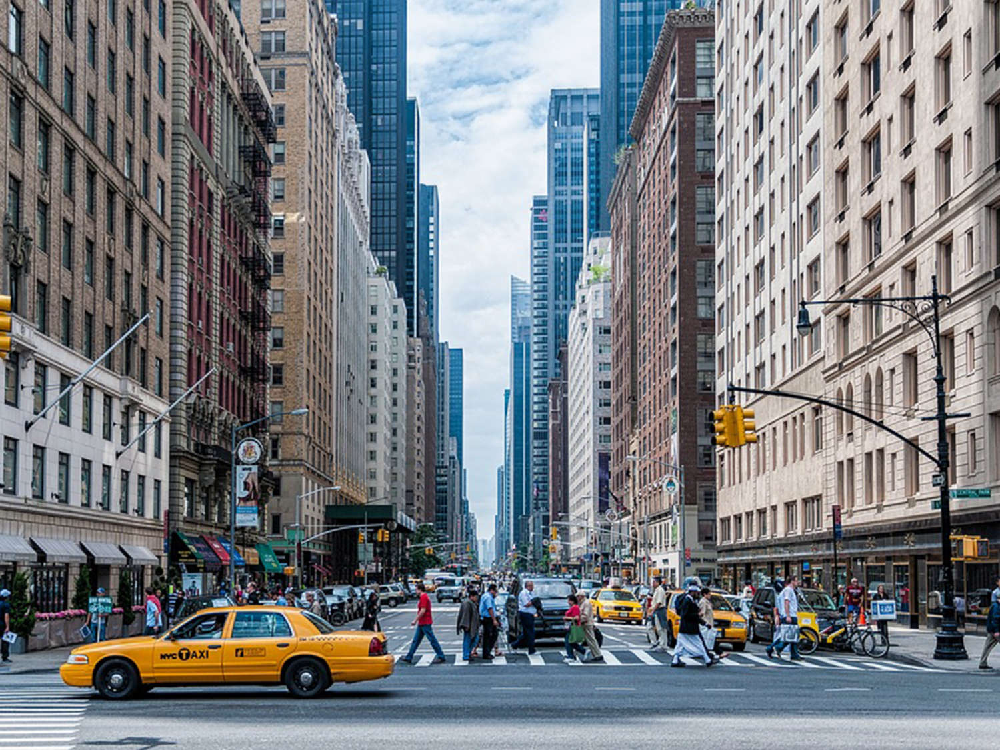

“City Bike Courage” – ChatGPT
I want to ride the city’s pulse,
to let the pedals catch its beat—
to glide past cabs and corner carts,
wind threading cool through summer heat.
I want to ride the city’s pulse,
to let the pedals catch its beat—
to glide past cabs and corner carts,
wind threading cool through summer heat.